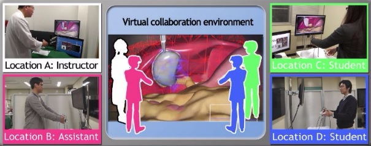
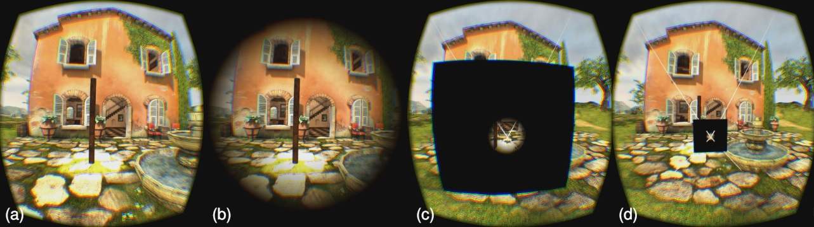

A Software Architecture for Distributed AR Applications
Abstract: The recent advances in hardware technology expanded the scope of Augmented Reality applications to mobile devices such as tablets and smartphones.Given their limited battery resources, distributed computing becomes a tempting approach to develop AR applications. Although frameworks that support the development of distributed AR systems exist, they are mostly complex in their nature.In this article, we present asoftware architecture that mainly targets distributed AR systems. As a proof of concept, we developed three different applications based on this architecture. The applications use different devices such as smartphones, webcams and head mounted displays (HMD) and allows the user to interact with the system in many different ways, providingthe user with realistic AR experience.An Ancient Roman ExperienceEnhanced by Using PIPES
Abstract: This paper describes an experience that presents an enhanced virtual tour of the Piazza d’Oro Roman palace. This work explores the educational utility in presenting a historically accurate virtual environment to students studying ancient Rome. An Oculus Rift Head-Mounted Display (HMD) and headphones provide common visual and auditory feedback while PIPES controls and affords additional environmental effects: wind, heat, and scent.b3.js: A Library for Interactive Web Data Visualizations in Virtual Reality
Abstract: As virtual reality (VR) devices become more ubiquitous, data scientists increasingly recognize the power of viewing and manipulating complex, multivariate data in immersive virtual worlds. In their quest to extract knowledge from the data, data scientists may benefit from visualizations that are easily controlled by hand motion. We here present b3.js, a library for creating interactive VR data visualizations on a web browser. The 3D visualizations, for example, 3D scatter, bar, and surface plots, may be viewed through the Oculus Rift and manipulated gesturally with the Leap Motion controller. Oculus Rift provides immersive point of view perspective within the VR environment. Leap Motion enables gestural interaction by allowing users to control the parameters of the virtual camera, for example, modify the point of view. Users can also modify points of a rendered plot. We show that combining the Oculus Rift and Leap Motion with b3.js enables users to engage with a complex data set consisting of coherently-organized 3D flight paths of thousands of bats. A novel data exploration experience was created that is difficult to achieve on a flat screen with the traditional mouse-keyboard paradigm.Belt-Based Haptic Device for Representing Scene Depth Information
Abstract: This paper aims to demonstrate the usage of haptic device for helping the navigation task in a virtual environment. We developed a belt-shaped interface with a matrix of 35 (7×5) vibrotactile actuators attached to the users’ abdomen. Tests demonstrated that the device can help users perceive the movement of objects, as well as allow them to move in environments containing obstacles without using vision.bioSync: Wearable Haptic I/O Device for Synchronous Kinesthetic Interaction
Abstract: This paper presents a synchronous kinesthetic interaction among people through haptic input/output based on biosignal measurement and stimulation. Users are able to bi-directionally transmit kines-thetic experiences such as rigidity of joints or exertion of muscles in addition to physical bodily motion. Such interaction would be very important in the fields of rehabilitation and sports training. In this study, we introduce a set of wearable devices that is capable of both electromyogram (EMG) measurement and electrical muscle stimulation (EMS) simultaneously on the same muscle by using common electrodes. To achieve smooth kinesthetic bi-directional interaction, we propose a new method for discharging the residual potential of the stimulation in order to enable fastest simultaneous operation (40Hz). Through a performance evaluation, participants could recognize the teacher’s exertion strength on a 5-point scale without visual information.Brief Demonstration of Olfactory and Visual Presentation Using Wearable Olfactory Display and Head Mounted Display
Abstract: This article introduces our demonstration content employing a wearable olfactory display and a head mounted display(HMD). An olfactory display is a gadget to present scents to one or more user(s). We developed the olfactory display using a surface acoustic wave(SAW)device and micro pumps. The SAW device can atomize liquid droplets forcibly based on SAW streaming phenomenon, even low-volatile odor compound can be presented. In addition, we miniaturized the olfactory display so that palm-sized olfactory display can be available. Then, we combined it with a HMD. Through the HMD, people walk around on the plane in VR world. If a participant approaches a tree bearing oranges, he/she would feel orange scents injected from the wearable olfactory display.Calclex VR – A Virtual Reality Serious Game for Dyslexic and Dyscalculic Kids
Abstract: The aim of this work is the development of an immersive serious game to assist in the learning process of dyslexic and dyscalculic individuals. Considering that most of the patients under specific treatment are kids, this paper proposes the combination of serious games and Virtual Reality (VR) to increase the motivation of these patients. The choice of VR as the main tool has as goal the improvement in the visual and auditory concentration of these individuals, since the distractions present in the real environment can affect the effectiveness of the treatment while conducting learning activities.Dental Simulator for Endodontic Access Cavity Preparation
Abstract: This paper presents a virtual environment to simulate the opening process of a tooth’s crown. The environment tries to simulate a haptic interaction between a high-speed hand piece dental drill and a tooth during the dental material removal process. A low-cost device was created specifically for this application. The simulator is designed to train dental students,allowing the tasks to be repeated in controlled situations, while the students movements are monitored.First-Person VR Design for Cardiac Anatomy Education
Abstract: This demonstration showcases our research studying how to design first-person immersive experiences for education. Specifically, we are studying the benefits of immersion in certain applications such as cardiac anatomy education.To control for variance in the display equipment, we simulate a large-screen display within a head-mounted display. We are also studying joystick-based locomotion techniques for complex navigation tasks suchas navigating the inside of a heart andnavigational aids within these environments.Immersive Decontamination Training for Nursing Students
Abstract: To better train undergraduate nursing students in disaster preparedness, a simulation was developed to teach the process of decontaminating a patient exposed to a radiological agent. The efficacy of the virtual training simulation is being assessed and compared to traditional text-or web-based training methods. Early work indicated that a combination of Razer Hydra hand tracking and Oculus Rift display provided the best usability, and have shown measurable benefits of simulation training over traditional techniques.Leap Motion Hand and Stylus Tracking for Calibration and Interaction within Optical See-Through Augmented Reality
Abstract: Highly anticipated consumer level optical see-through head-mounted display offerings, such as the Microsoft Holo Lens and Epson Move-rio Pro BT-2000, include not only the standard IMU and GPS sensors common to modern mobile devices, but also feature additional depth sensing and hand tracking cameras intended to support and promote the development of innovative user interaction experiences. Through this demonstration, we showcase the potential of these technologies in facilitating not only interaction, but also intuitive user-centric calibration, for optical see-through augmented reality. Additionally, our hardware configuration provides a straightforward example for combining consumer level sensors, such as the Leap Motion controller,with existing head-mounted displays and secondary tracking devices to ease the development and deployment of immersive stereoscopic experiences. We believe that the methodologies presented within our demonstration not only illustrate the potential for ubiquitous calibration across next generation consumer devices, but will also inspire and encourage further developmental efforts for optical see-through augmented reality from the community at large.Quantifying Immersion in Virtual Reality Exergames
Abstract: Virtual Reality (VR) has been perceived to be more immersive thenthe traditional screen, but little research has been conducted sincethe release of newer VR peripherals to confirm this claim. Ourresearch compares the attentiveness players have on non-game re-lated stimuli and their perceived fatigue as potential measures ofimmersion. Our preliminary results suggests that players using VRin an exergame exert more energy and report being less fatiguedthan players using traditional screens.Remote and Low Cost VR Surgery Simulator
Abstract: This paper introduces a remote and low cost laparoscopic VR surgery simulator which is capable of coaching from a remote location.In recent years, many countries have experienced a shortage of not only physicians, but also surgeons. This problem has led to a significant decrease in providing superior training of surgical techniques to novices (e.g. medical students). Therefore, there is a specific need to realize an efficient VR surgery training system to develop our future expert surgeons. In our VR surgery training system, this system-specific surgical training (e.g. training of collaborative surgical tasks, one-to-one coaching, and training many novices simultaneously from remote location) under general PCs and network environment is possible.
Subtle Dynamic Field-Of-View Modification for Alleviating VR Sickness: Research Demonstration
Abstract: Virtual Reality (VR) sickness can cause intense discomfort, shorten the duration of a VR experience, and create an aversion to further use of VR. It has been noted that decreasing field of view (FOV)tends to decrease VR sickness, though at the expense of sense of presence. We demonstrate an approach in which FOV is subtly and automatically manipulated during a VR session. We have shown that this can reduce the degree of VR sickness perceived by study participants, without decreasing their subjective level of presence,while minimizing their awareness of the intervention.